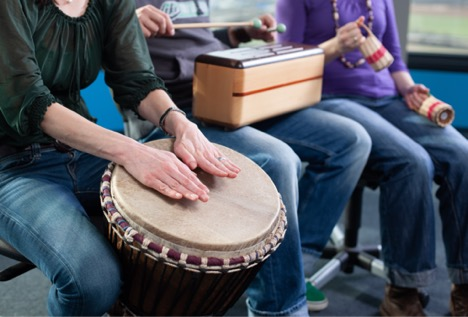

La musicoterapia es una disciplina de amplia trayectoria en diversos países de todo el mundo desde la cual se trabaja para elevar la calidad de vida de los/as beneficiarios/as mediante la utlización de la musica y sus elementos. Se trabaja tanto desde el campo clinico como comunitario y el abordaje puede ser tanto grupal como individualmente a diversas poblaciones. Los objetivos que se trabajan estan alineados al perfil de paciente/beneficiario haciendo foco principalmente en el área cognitiva, emocional, social y fortaleciendo el potencial de autonomia.
Buscamos que el trabajo desde la musicoterapia se de en un espacio adeacuado para la utilización de instrumentos musicales, la voz, el cuerpo y el desarrollo de la escucha, utilizando recursos aditivos de edición previa o de creación propia. El trabajo se desarrolla haciendo foco en la musicalidad de/los beneficiarios/as y mediante las expepriencias musicales. En el mismo sentido utilizamos recursos de accesibilidad tanto desde lo analógico como desde lo digital para una alcanzar una experiencia completa por parte del beneficiario/a